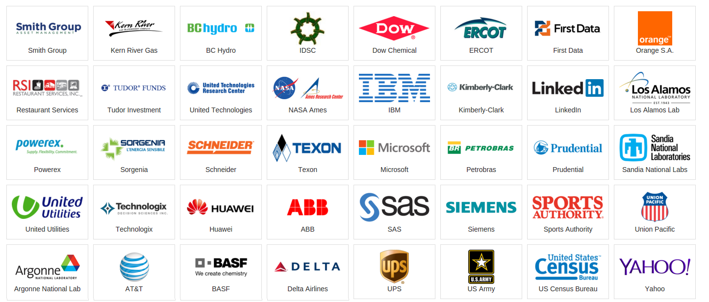
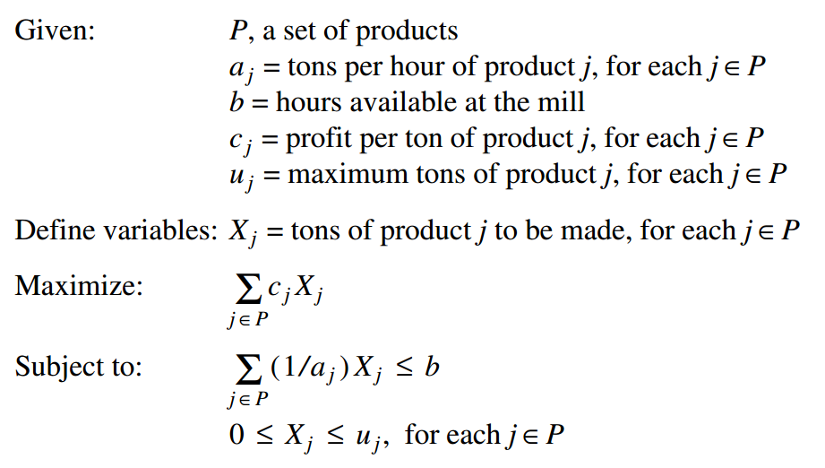
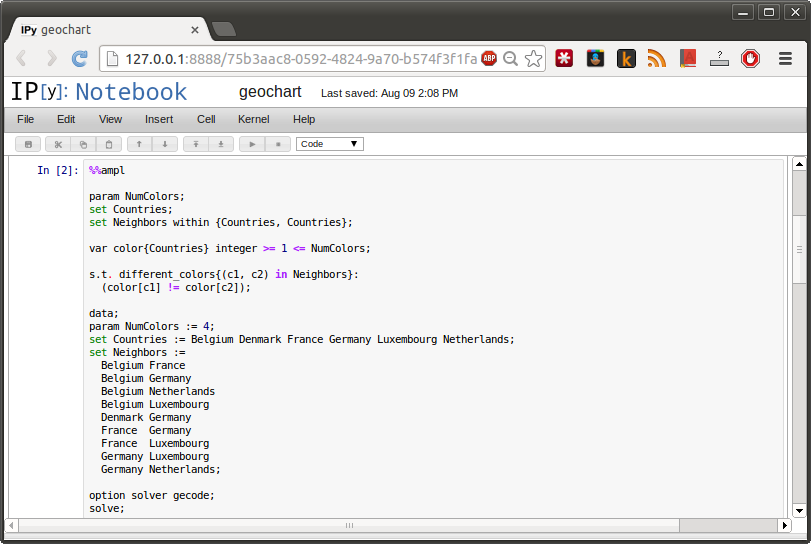

<!doctype html> <html lang="en">
<head>
  <meta charset="utf-8">

  <title>Overview of AMPL features and comparison with other programming languages</title>

  <meta name="author" content="Victor Zverovich">

  <meta name="apple-mobile-web-app-capable" content="yes" />
  <meta name="apple-mobile-web-app-status-bar-style" content="black-translucent" />

  <meta name="viewport" content="width=device-width, initial-scale=1.0, maximum-scale=1.0, user-scalable=no">

  <link rel="stylesheet" href="../../common/reveal.js/css/reveal.css">
  <link rel="stylesheet" href="../../common/reveal.js/css/theme/beige.css" id="theme">

  <!-- For syntax highlighting -->
  <link rel="stylesheet" href="../../common/reveal.js/lib/css/zenburn.css">

  <!-- If the query includes 'print-pdf', include the PDF print sheet -->
  <script>
    if( window.location.search.match(/print-pdf/gi) ) {
      var link = document.createElement('link');
      link.rel = 'stylesheet';
      link.type = 'text/css';
      link.href = '../../common/reveal.js/css/print/pdf.css';
      document.getElementsByTagName('head')[0].appendChild(link);
    }
  </script>

  <style>
  body {background: white;}
  comment {display: none;}

  .reveal h1 {
    padding-bottom: 50px;
  }
  
  .reveal h1,
  .reveal h2 {
    font-size: 200%;
    text-transform: none;
    text-align: center;
    margin: 0;
  }
  .reveal section:first-of-type {
    text-align: center;
  }
  .reveal section {
    text-align: left;
  }
  
  .reveal p {
    margin-top: 10px;
    margin-bottom: 10px;
  }

  .reveal .MathJax_Display {
    margin-top: 20px;
    margin-bottom: 20px;
  }
  .reveal .plot {
    box-shadow: 0 0 20px #888888;
    margin-left: auto; margin-right: auto;
  }
  
  .reveal .transp-image {
    display: block;
    margin-left: auto;
    margin-right: auto;
    border: none;
    box-shadow: none;
  }
  
  /* Fix nohighlight styles. */
  .reveal pre code { display: block; background: #3F3F3F; color: #DCDCDC; }
  
  /* Fix image styles. */
  .reveal section img { border: none; box-shadow: none; }
  
  img.float-right {
    clear:right;
    float:right;
  }

  div .new { color: red; }

  /* D3 styles */
  .node circle {
    fill: #fff;
    stroke: steelblue;
    stroke-width: 1.5px;
  }

  .node {
    font: 20px sans-serif;
  }

  .link {
    fill: none;
    stroke: #ccc;
    stroke-width: 1.5px;
  }
  
  .chart rect {
    fill: steelblue;
  }

  .chart .bar text {
    fill: white;
    font: 20px sans-serif;
    text-anchor: end;
  }
  .chart .axis text {
    font: 20px sans-serif;
    fill: black;
  }
  .chart .x.axis text {
    font: 16px sans-serif;
  }

  .chart .axis path,
  .chart .axis line {
    fill: none;
    stroke: #000;
    shape-rendering: crispEdges;
  }
  .chart .y.axis line,
  .chart .y.axis path {
    display: none;
  }
  </style>

  <script type="text/javascript" charset="utf-8" src="MathBox.js/vendor/domready.js"></script>
  <script type="text/javascript" charset="utf-8" src="MathBox.js/build/MathBox-bundle.js"></script>

  <link href="MathBox.js/base.css" rel="stylesheet" type="text/css" media="screen">  
</head>

<body>
<script src="../../common/reveal.js/lib/js/head.min.js"></script>
<script src="../../common/reveal.js/js/reveal.js"></script>


<div class="reveal">
<!-- Any section element inside of this container is displayed as a slide -->
<div class="slides">

<section data-markdown data-separator="---">
<script type="text/template">
Overview of AMPL features and comparison with other programming languages
=========================================================================

Victor Zverovich

<small><a href="mailto:viz@ampl.com">viz@ampl.com</a></small>

AMPL Optimization Inc.

<br>

<small>University of Santiago de Compostela, <br>
January 18-19, 2016, Spain</small>
---

## Outline

* Overview, features and users

* Model, data and script

* User interfaces

* Comparison with other languages and systems

* Solvers

---

## Overview

* AMPL is a modeling language and system for mathematical optimization
  * High-level declarative language for defining optimization models
  * Scripting language
  * Expressive data specification language
* Supports all major proprietary and open-source solvers
* Database and spreadsheet access on multiple platforms
* Widely used with > 200 courses world-wide, many commercial customers
* Efficient
* Stable

<aside class="notes">
<ul>
<li>300 courses now?
<li>Stable: AMPL is ~30 years old, paper ~26 years ago (1990). You can take a model from that paper and run it now.
</ul
</aside>
---

## AMPL modeling language

* High-level and declarative
* Similar to algebraic notation
* Powerful set and indexing expressions
* Supports a wide range of optimization problem types:

  * 
    linear programming
  * quadratic programming
  * second-order cone programming
  * semidefinite programming
  * general nonlinear problems
  * complementarity problems
  * logic and constraint programming ...

  All in discrete and continuous variables

---

## AMPL customers



More in http://ampl.com/about-us/customers/

---

## Government customers

* 
  Financial agencies
  * United States
  * Canada
  * Sweden

* U.S. departments
  * Census Bureau
  * Army Corps of Engineers

* U.S. research centers
  * Argonne National Laboratory
  * Sandia National Laboratories
  * Lawrence Berkeley Laboratory

---

## Academic customers

**Research**

* Over 250 university installations worldwide
* Nearly 1000 citations in scientific papers
* engineering, science, economics, management

**Teaching**

* Linear & nonlinear optimization, stochastic programming
* Operations Research
* Specialized courses
  * Supply chain modeling
  * Electric power system planning
  * Transportation logistics
  * Communication network design & algorithms

---

## Free AMPL for Courses

**Streamlined for quick setup**

* One-page application form for each course offering
* AMPL & solvers in one compressed file for each platform
  * Accepts problems of any size
* Freely install on any computer supporting the course
* Freely distribute to students for their own computers
  * Times out after your specified course end date

**Includes top-quality solvers**

* Gurobi, CPLEX, KNIRO, MINOS, SNOPT

**Available now**

* More information: [www.ampl.com/courses.html](www.ampl.com/courses.html)
* Application form: [www.ampl.com/AMPLforCourses.pdf](www.ampl.com/AMPLforCourses.pdf)

<aside class="notes">
We will be using AMPL for courses
</aside>

---

## Example: basic production model



<aside class="notes">
Simple model for illustration purposes
</aside>

---

## Basic production model in AMPL

Main concepts:

* Input data: sets and parameters
* Optimization entities: variables, objectives and constraints

```python
set PROD;  # products

param rate {PROD} > 0;     # tons produced per hour
param avail >= 0;          # hours available in week

param revenue {PROD};      # revenue per ton
param market {PROD} >= 0;  # limit on tons sold in week

var Make {p in PROD} >= 0, <= market[p]; # tons produced

maximize Total_Profit: sum {p in PROD} revenue[p] * Make[p];
               # Objective: total profits from all products

subject to Time: sum {p in PROD} (1/rate[p]) * Make[p] <= avail;
               # Constraint: total of hours used by all
               # products may not exceed hours available
```

---

## AMPL data

* Data for sets and parameters, initial values for primal and dual variables
* Lists, tables, slices, transposition
* Less syntactic noise compared to popular general-purpose languages

```python
data; # data for a multi-period production problem
param T := 4;
set PROD := bands coils;

param avail :=  1 40  2 40  3 32  4 40 ;

param rate :=  bands 200   coils 140 ;

param revenue:   1     2     3     4 :=
       bands    25    26    27    27
       coils    30    35    37    39 ;

param market:    1     2     3     4 :=
       bands  2000  8500  6500  6500
       coils  3000  2500  4500  4200 ;
```

---

## AMPL scripting

* Variety of commands to combine model, data, modify values, invoke solvers,
  report results
* Control flow contructs

```
model steelT.mod;
data steelT.dat;
option solver_msg 0;
set AVAIL3;
param avail3_obj {AVAIL3};
param avail3_dual {AVAIL3};
let AVAIL3 := avail[3] .. avail[3] + 15 by 5;
for {a in AVAIL3} {
  let avail[3] := a;
  solve;
  let avail3_obj[a] := Total_Profit;
  let avail3_dual[a] := Time[3].dual;
}
display avail3_obj, avail3_dual;
```

---

## AMPL ecosystem


---

## AMPL user interfaces

* Interactive command-line interface

* Eclipse-based IDEs:

  - AMPL IDE
  - AMPLDev (adds stochastic programming features)

* Solver Studio for Excel

* Matlab (TOMLAB)

* IPython (experimental)

---

## AMPL IDE

* 
  [Eclipse](https://www.eclipse.org) - one of the most popular polyglot IDEs. Supports Java, C++, Python, Mathematica, R and more:
  $\LaTeX$, version control systems.

* [AMPL IDE](http://ampl.com/products/ide/) is based on Eclipse platform.

* <span class="new">New:</span> AMPL IDE has been updated to the latest Mars release of Eclipse.

* <span class="new">New:</span> AMPL support can be added to existing Eclipse IDE.

This allows building applications in your favorite programming
language with access to numerous solvers and modeling power of AMPL.

---

## AMPL IDE


<aside class="notes">
<ul>
 <li>Links to error locations
 <li>The ability to interrupt solvers and get the currently best solution
</ul>
</aside>

---

## AMPL IPython plugin

<div style="text-align: center">

</div>

<aside class="notes">
<ul>
 <li>Experimental
 <li>What is magic?
 <li>Who used IPython before?
 <li>Constraint programming
</ul>
</aside>

---

## AMPL IPython plugin

<div style="text-align: center">

</div>

<aside class="notes">
<ul>
 <li>Google Chart
 <li>AMPL entities are automatically available in Python
</ul>
</aside>

---

## Comparison with general-purpose languages

AMPL:

* Declarative model
* Separation of model and data
* Easy database connectivity
* Limited scripting

General-purpose languages:

* Imperative, functional or object-oriented
* Optimization modeling is done via libraries
* Poor man's modeling languages via operator overloading 

<aside class="notes">
<ul>
 <li>Operator overloading is limited in popular languages
 <li>Can use research language, but then few libraries
 <li>Still need to learn a new embedded language with its own semantics
</ul>
</aside>

---

## Comparison with general-purpose languages


Best of both worlds: AMPL API - declarative AMPL model controlled from an
application written in a general-purpose language

Modeling:

* Declarative model
* Separation of model and data

Programming:

* Familiar development environment
* Access to libraries
* Seamless integration with the application logic

---

## Other proprietary modeling systems

* GAMS

  * Similar in scope and features
  * Also supports many solvers, but not CP
  * More of a batch rather than interactive system

* AIMMS

  * Visualization capabilities
  * Emphasis on GUI, not language
  * Fewer solvers, proprietary connections

* MPL

* Some solver vendors have their own modeling languages

  * IBM OPL for CPLEX, Xpress Mosel

---

## Transportation model in AMPL

```cs
set Plants;
set Markets;

# Capacity of plant p in cases
param Capacity{p in Plants};

# Demand at market m in cases
param Demand{m in Markets};

# Distance in thousands of miles
param Distance{Plants, Markets};

# Freight in dollars per case per thousand miles
param Freight;

# Transport cost in thousands of dollars per case
param TransportCost{p in Plants, m in Markets} :=
  Freight * Distance[p, m] / 1000; 

# Shipment quantities in cases
var shipment{Plants, Markets} >= 0;

# Total transportation costs in thousands of dollars
minimize cost:
  sum{p in Plants, m in Markets}
    TransportCost[p, m] * shipment[p, m];

# Observe supply limit at plant p
s.t. supply{p in Plants}:
  sum{m in Markets} shipment[p, m] <= Capacity[p];

# Satisfy demand at market m
s.t. demand{m in Markets}:
  sum{p in Plants} shipment[p, m] >= Demand[m];
  
data;

set Plants := seattle san-diego;
set Markets := new-york chicago topeka;

param Capacity :=
    seattle   350
    san-diego 600;

param Demand :=
    new-york 325
    chicago  300
    topeka   275;

param Distance : new-york chicago topeka :=
    seattle        2.5      1.7     1.8
    san-diego      2.5      1.8     1.4;

param Freight := 90;
```

<aside class="notes">
<ul>
 <li>Source: Wikipedia
 <li>Influence of other languages originating from Bell Labs (C, C++, AWK)
 <li>Brian Kernighan developed the first translator in C++
     https://www.youtube.com/watch?v=Sg4U4r_AgJU
</ul>
</aside>

---

## Transportation model in GAMS

```nohighlight
 Sets
      i   canning plants   / seattle, san-diego /
      j   markets          / new-york, Chicago, topeka / ;

 Parameters

      a(i)  capacity of plant i in cases
        /    seattle     350
             san-diego   600  /

      b(j)  demand at market j in cases
        /    new-york    325
             Chicago     300
             topeka      275  / ;

 Table d(i,j)  distance in thousands of miles
                   new-york       Chicago      topeka
     seattle          2.5           1.7          1.8
     san-diego        2.5           1.8          1.4  ;

 Scalar f  freight in dollars per case per thousand miles  /90/ ;

 Parameter c(i,j)  transport cost in thousands of dollars per case ;
           c(i,j) = f * d(i,j) / 1000 ;

 Variables
      x(i,j)  shipment quantities in cases
      z       total transportation costs in thousands of dollars ;

 Positive Variable x ;

 Equations
      cost        define objective function
      supply(i)   observe supply limit at plant i
      demand(j)   satisfy demand at market j ;

 cost ..        z  =e=  sum((i,j), c(i,j)*x(i,j)) ;
 supply(i) ..   sum(j, x(i,j))  =l=  a(i) ;
 demand(j) ..   sum(i, x(i,j))  =g=  b(j) ;

 Model transport /all/ ;
 Solve transport using lp minimizing z ;
```

<aside class="notes">
<ul>
 <li>Fortran influence: operators, parentheses for indexing
 <li>Model and data are combined (I think it might be possible to provide data separately)
</ul>
</aside>

---

## Transportation model in AIMMS

```nohighlight
MAIN MODEL Main_Transport

  DECLARATION SECTION 

    QUANTITY:
       identifier   :  QuantityLength
       base unit    :  mile ;

    QUANTITY:
       identifier   :  QuantityCurrency
       base unit    :  $ ;

    SET:
       identifier   :  Plants
       index        :  p ;

    SET:
       identifier   :  Markets
       index        :  m ;

    PARAMETER:
       identifier   :  Capacity
       index domain :  p ;

    PARAMETER:
       identifier   :  Demand
       index domain :  m ;

    PARAMETER:
       identifier   :  Distance
       index domain :  (p,m)
       unit         :  1000 * mile ;

    PARAMETER:
       identifier   :  Freight
       unit         :  $/(1000 * mile) ;

    PARAMETER:
       identifier   :  TransportCost
       index domain :  (p,m)
       unit         :  1000 * $
       definition   :  Freight * Distance(p,m) ;

    VARIABLE:
       identifier   :  Shipment
       index domain :  (p,m)
       range        :  nonnegative ;

    CONSTRAINT:
       identifier   :  SatisfyCapacity
       index domain :  p
       definition   :  sum(m, Shipment(p,m)) <= Capacity(p) ;

    CONSTRAINT:
       identifier   :  MeetDemand
       index domain :  m
       definition   :  sum(p, Shipment(p,m)) >= Demand(m) ;

    VARIABLE:
       identifier   :  TotalCost
       unit         :  1000 * $
       definition   :  sum((p,m), TransportCost(p,m)*Shipment(p,m)) ;

    MATHEMATICAL PROGRAM:
       identifier   :  TransportModel
       objective    :  TotalCost
       direction    :  minimize
       constraints  :  AllConstraints
       variables    :  AllVariables ;

  ENDSECTION  ;

  PROCEDURE
    identifier :  MainInitialization
    body       :  
      Plants := data { seattle, san-diego };
      Markets := data { new-york, Chicago, topeka };
      
      Capacity(p) := data { seattle : 350, san-diego : 600 };
      Demand(m) := data { new-york : 325, Chicago : 300, topeka : 275 };
      
      Distance(p,m) := data
      { ( seattle, new-york ) :  2.5,  ( seattle, Chicago  ) :  1.7,  ( seattle, topeka   ) :  1.8,
        ( san-diego, new-york ) :  2.5,  ( san-diego, Chicago  ) :  1.8,  ( san-diego, topeka   ) :  1.4 };
      
      Freight := 90 [$/(1000*mile)];

  ENDPROCEDURE  ;

  PROCEDURE
    identifier :  MainExecution
    body       :  
      solve TransportModel;

  ENDPROCEDURE  ;

ENDMODEL Main_Transport ;
```

<aside class="notes">
<ul>
 <li>GUI-first approach: dump of GUI data structures rather than something that a modeler is supposed to write
 <li>Nice feature - units (can catch some simple errors)
</ul>
</aside>

---

## Optimization modeling in MATLAB

* Optimization Toolbox
  * very low-level matrix-based API
  * limited modeling capabilities
  * good visualization and access to other MATLAB functionality
* TOMLAB
  * compatible with Optimization Toolbox
  * AMPL interface
* YALMIP: optimization modeling toolbox
* CVX: Disciplined Convex Programming

---

## Open-source modeling languages

* Pyomo

  * Open-source modeling system in Python
  * Uses AMPL solver interface

* GNU MathProg

  * Open-source implementation of a subset of AMPL
  * Only LP and MIP

* ZIMPL: Zuse Institut Mathematical Programming Language

* CMPL: Coin Mathematical Programming Language

---

## AMPL and open source

* AMPL has an open solver interface

* AMPL Solver Library and the AMPL/MP library that can be
  used to connect solvers are open-source:
  https://github.com/ampl

* Most solver drivers are open source

* Up-to-date binaries of open-source solvers are provided
  http://ampl.com/products/solvers/open-source/

---

## LP, QP and MIP solvers

Linear & convex quaratic in continous and integer variables

Commercial:

* CPLEX (IBM Corporation)
* Gurobi (Gurobi Optimization)
* Xpress (FICO)
* ...

Open-source:

* CBC
* Glpk
* lp_solve

http://ampl.com/products/solvers/all-solvers-for-ampl/

---

## Nonlinear solvers

* CONOPT (ARKI Consulting & Development) - multi-method architecture founded on reduced gradient
* KNITRO (Ziena Optimization) - choice of interior-point and active-set methods,
  with support for integer variables and automatic multiple starts
* MINOS (Stanford University) - sophisticated reduced gradient approach
  founded on a linear primal simplex method
* SNOPT (Stanford University) - sequential quadratic approximation method
* ...

---

## Alternative solvers

* 
  BARON (The Optimization Firm) — Global nonconvex nonlinear optimization in continuous and integer variables
* LGO (Pintér Consulting) — Global and local optimization over general functional forms
* LocalSolver (Innovation 24) — Local search on combinatorial and numerical constraints to find high-quality solutions quickly

---

## Constraint programming solvers

* [Constraint programming](http://en.wikipedia.org/wiki/Constraint_programming)
  (CP) allows natural formulation of many combinatorial optimization problems.

* AMPL has supported CP since early 2000s when the paper
  "Extending an Algebraic Modeling Language to Support Constraint Programming"
  was published.

* CP solvers connected to AMPL:
  - ilogcp: [IBM/ILOG CPLEX CP Optimizer](http://www-01.ibm.com/software/integration/optimization/cplex-cp-optimizer/)
  - gecode: [Generic constraint development environment](http://www.gecode.org/).
  - jacop: [Java constraint solver](http://jacop.osolpro.com/)

---

## LocalSolver

* 
  Combines diverse optimization techniques to provide high-quality solutions in short
  running times.

* Uses local search, constraint propagation & inference, and techniques
  from linear, mixed-integer, and nonlinear programming.

* Supports linear and nonlinear objectives and constraints in continuous and
  discrete variables.

* Supports AMPL logical operators such as `or`, `exists`, `atmost`, and nonsmooth
  numerical functions such as `abs`, `trunc`, `if-then-else`.

---

## LocalSolver for AMPL

* Supports nearly all LocalSolver features & some AMPL-specific via transformation

* AMPL expressions map naturally onto LocalSolver's

* Very efficient solver interface: the problem is constructed directly in
  LocalSolver form bypassing the ASL representation

* Small: ~1000 C++ LOC

* Source code: https://github.com/ampl/mp/tree/master/solvers/localsolver

---

## References

* AMPL IDE: http://ampl.com/products/ide/

* AMPL solvers: http://ampl.com/products/solvers/

* Open-source solvers:
  http://ampl.com/products/solvers/open-source/

* "Logic" and Constraint Programming Extensions:
  http://ampl.com/resources/logic-and-constraint-programming-extensions/

* AMPL projects on GitHub:
  https://github.com/ampl

---

## Questions?

</script>
</section>

</div>
</div>

<script>
  // Full list of configuration options available here:
  // https://github.com/hakimel/reveal.js#configuration
  Reveal.initialize({
    controls: true,
    progress: true,
    history: true,
    center: true,

    theme: Reveal.getQueryHash().theme, // available themes are in /css/theme
    transition: Reveal.getQueryHash().transition || 'default', // default/cube/page/concave/zoom/linear/fade/none

    // Parallax scrolling
    // parallaxBackgroundImage: 'https://s3.amazonaws.com/hakim-static/reveal-js/reveal-parallax-1.jpg',
    // parallaxBackgroundSize: '2100px 900px',

    math: {
      mathjax: 'https://cdnjs.cloudflare.com/ajax/libs/mathjax/2.7.1/MathJax.js',
      config: 'TeX-AMS-MML_HTMLorMML'  // See http://docs.mathjax.org/en/latest/config-files.html
    },

    // Optional libraries used to extend on reveal.js
    dependencies: [
      { src: '../../common/reveal.js/lib/js/classList.js', condition: function() { return !document.body.classList; } },
      { src: '../../common/reveal.js/plugin/markdown/marked.js', condition: function() { return !!document.querySelector( '[data-markdown]' ); } },
      { src: '../../common/reveal.js/plugin/markdown/markdown.js', condition: function() { return !!document.querySelector( '[data-markdown]' ); } },
      { src: '../../common/reveal.js/plugin/highlight/highlight.js', async: true, callback: function() { hljs.initHighlightingOnLoad(); } },
      { src: '../../common/reveal.js/plugin/zoom-js/zoom.js', async: true, condition: function() { return !!document.body.classList; } },
      { src: '../../common/reveal.js/plugin/notes/notes.js', async: true, condition: function() { return !!document.body.classList; } },
      { src: '../../common/reveal.js/plugin/math/math.js', async: true }
    ]
  });
  //Reveal.addEventListener('slidechanged', function(event) {
  //  document.getElementById("logo").style.visibility = Reveal.isFirstSlide() ? 'hidden' : 'visible';
  //});
</script>

<!-- Google Analytics -->
<script type="text/javascript">
  var _gaq = _gaq || [];
  _gaq.push(['_setAccount', 'UA-20116650-1']);
  _gaq.push(['_trackPageview']);
  (function() {
    var ga = document.createElement('script'); ga.type = 'text/javascript'; ga.async = true;
    ga.src = ('https:' == document.location.protocol ? 'https://ssl' : 'http://www') + '.google-analytics.com/ga.js';
    var s = document.getElementsByTagName('script')[0]; s.parentNode.insertBefore(ga, s);
  })();
</script>
</body>
</html>
